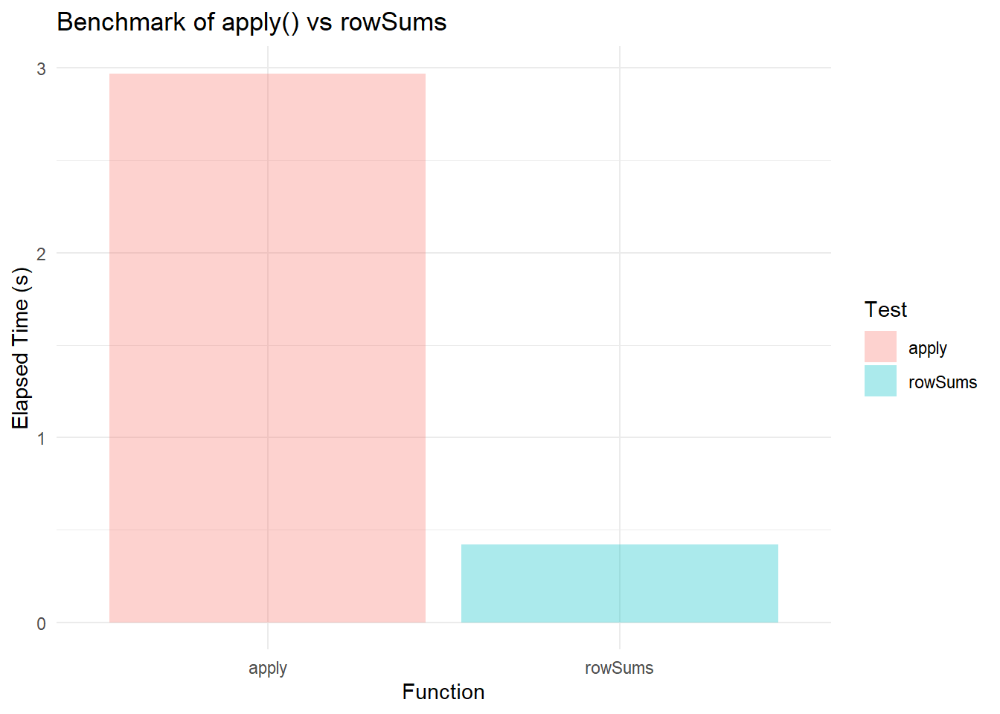

Complete Guide to Applying Functions to Each Row in R Matrices and Data Frames
Learn how to use the apply() function in R to efficiently perform row-wise operations on matrices and data frames. This comprehensive guide covers syntax, practical examples, troubleshooting tips, and best practices for R programmers looking to streamline their data analysis workflows.
code
rtip
Author
Steven P. Sanderson II, MPH
Published
September 15, 2025
Keywords
Programming, apply function in R, row-wise operations R, R data frame functions, matrix operations R, R programming apply, apply function row example, how to use apply in R, apply vs lapply in R, apply function custom function R, troubleshooting apply function R
Key Takeaway: The apply() function in R is your go-to tool for performing operations on rows or columns of matrices and data frames. With MARGIN=1 for rows and MARGIN=2 for columns, you can efficiently process data without writing explicit loops.
What is the apply() Function in R?
The apply() function is a powerful tool in R that allows you to apply a function to the margins (rows or columns) of an array, matrix, or data frame . Instead of writing loops, you can process entire rows or columns with a single function call, making your code cleaner and more efficient.
The apply() function returns a vector, array, or list of values obtained by applying a function to the specified margins . It’s particularly useful for R programmers who need to perform the same operation across multiple rows or columns of data.
Basic Syntax and Arguments
Core Syntax Structure
apply(X, MARGIN, FUN, ...)
Parameter Breakdown
Parameter
Description
Values
Example
X
Input data
Matrix, array, or data frame
my_matrix
MARGIN
Direction of operation
1 = rows, 2 = columns
1 for row-wise
FUN
Function to apply
Built-in or custom function
sum, mean
…
Additional arguments
Extra parameters for FUN
na.rm = TRUE
Key Points to Remember
MARGIN=1: Apply function to each row
MARGIN=2: Apply function to each column
X must be a matrix or data frame (data frames get coerced to matrices)
FUN can be any R function - built-in or user-defined
Row-wise Operations with apply()
Basic Row Operations
Here are some row wise operations using apply() with MARGIN=1:
# Visualize the results in a boxplotbenchmark_test_tbl |>ggplot(aes(x = test, y = elapsed)) +geom_bar(stat ="identity", alpha =0.328, aes(fill =factor(test))) +theme_minimal() +labs(title ="Benchmark of apply() vs rowSums",x ="Function",y ="Elapsed Time (s)",fill ="Test" )

Alternative Approaches
Other Apply Family Functions
lapply(): Works with lists, returns a list
sapply(): Simplifies lapply() output to vectors
mapply(): Multivariate version for multiple inputs
Tidyverse Alternatives
For complex row operations, consider:
library(dplyr)# Row-wise operations in dplyrscores %>%rowwise() %>%mutate(avg =mean(c(math, science, english)))
✅ Use MARGIN=1 for rows, MARGIN=2 for columns
✅ Ensure data is numeric before using apply()
✅ Use rowSums(), colSums(), rowMeans(), colMeans() for simple operations
✅ Test custom functions on individual rows/columns first
✅ Add error handling with tryCatch() for robust functions
✅ Consider alternatives for mixed-type data frames
✅ Remember that data frames are coerced to matrices
Quick Reference Table
Task
Code Example
MARGIN
Output
Row sum
apply(X, 1, sum)
1
Vector of row sums
Row mean
apply(X, 1, mean)
1
Vector of row means
Custom function
apply(X, 1, my_func)
1
Vector of results
With arguments
apply(X, 1, func, arg=value)
1
Vector with custom args
Anonymous function
apply(X, 1, function(x) ...)
1
Vector from custom logic
Your Turn!
Now it’s time to put your knowledge into practice! Below is a real-world scenario that will test your understanding of the apply() function for row-wise operations.
Practice Scenario: Student Performance Analysis
You’re analyzing test scores for students in a programming course. Each student took four exams: Midterm 1, Midterm 2, Final Project, and Final Exam.
Data Selection: We used student_scores[, 2:5]` to select only numeric columns, avoiding issues with mixed data types
Custom Functions: Task 3 and 5 showed how to write custom functions and apply them row-wise
Anonymous Functions: Tasks 4 and 5 used function(x) inline for concise operations
Practical Application: This exercise mirrors real-world data analysis scenarios
Alternative Solutions:
# You could also use:# For averages: rowMeans(scores_only) - faster for simple means# For sums: rowSums(scores_only) - faster for simple sums# But apply() gives you more flexibility for custom operations!
Test Your Understanding
After completing the exercise, ask yourself:
Why did we exclude the student_id column?(Hint: mixed data types)
Could we use rowMeans() instead of apply() for Task 1?(Yes, but apply() is more flexible)
How would you modify the code to handle missing values (NA)?(Add na.rm = TRUE)
Next Steps
Try modifying the exercise:
Add a sixth student with some missing scores (NA)
Create a function that assigns letter grades based on averages
Great job working through this exercise! You’ve now practiced the core concepts of using apply() for row-wise operations in real-world scenarios. This foundation will serve you well in data analysis projects.
Conclusion
The apply() function is an essential tool for R programmers working with matrices and data frames. By using MARGIN=1 for row-wise operations, you can efficiently process data without explicit loops. Remember to handle mixed data types carefully, consider performance alternatives for simple operations, and add error handling for robust code.
Key Takeaways:
Use apply(X, 1, FUN) for row-wise operations
Handle mixed data types by selecting numeric columns only
Consider rowSums(), rowMeans() for better performance on simple operations
Add error handling with tryCatch() for production code
Test custom functions thoroughly before applying to large datasets
Start experimenting with apply() in your next R project - it will make your data processing code cleaner and more efficient!
References
R Documentation - apply: Apply Functions Over Array Margins Official R documentation for the apply() function, including detailed syntax, arguments, usage examples, and technical specifications.
DataQuest - Apply Functions in R with Examples In-depth tutorial explaining the apply() function family in R with practical data analysis examples, comparing efficiency with loops and vectorized operations.
R-bloggers - Complete Tutorial on Using ‘apply’ Functions in R Step-by-step guide featuring real-world data analysis examples, custom function applications, and best practices for using apply() functions efficiently.